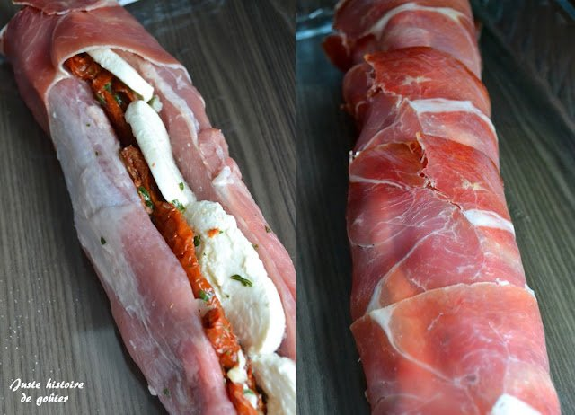

Filet mignon à l'italienne
Ingrédients
4×
- 6 à 8 tomates séchées
- basilic
- 1 gousse d'ail
- poivre
- 1 filet mignon
- sel
- 1 mozzarella
- origan
- 4 tranches de jambon sec

Préparation
Étape 1
Égoutter 6 à 8 tomates séchées en gardant leur huile. Ciseler du basilic et émincer finement 1 gousse d'ail. Mélanger le tout et ajouter du poivre.
Étape 2
Ouvrir en portefeuille 1 filet mignon dans la longueur. Saler l’intérieur avec du sel et le farcir de la préparation à la tomate.
Étape 3
Ajouter 1 mozzarella en tranches et saupoudrer d’origan.
Étape 4
Refermer le filet et l’entourer de 4 tranches de jambon sec en les faisant se chevaucher.
Étape 5
Verser un peu d’huile des tomates dans un plat, y poser le filet et enfourner 30min à 180ºC.
Résumé
6 à 8 tomates séchées
basilic
1 gousse d'ail
poivre
Ciseler émincer
1 filet mignon
sel
Ouvrir en portefeuille farcir
1 mozzarella
origan
4 tranches de jambon sec
entourer
enfourner 180ºC